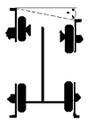
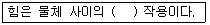
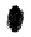
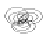
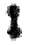
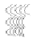
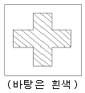

자동차보수도장기능사 (2008-07-13 기출문제)
1과목: 임의 구분
1. 다음 중 물체의 부피를 표시하는 단위가 아닌 것은?
- ℓ
- cm3
- cc
- Ω
(정답률: 92%)

2. 밀폐된 용기 속에 든 액체의 일부에 압력을 가할 경우, 그 압력은 모든 방향에 똑같은 압력을 전달하게 되는데 이러한 성질과 가장 관련이 깊은 것은?
- 파스칼의 원리 - 자동차의 유압 브레이크 작용
- 파스칼의 원리 - 실린더 밸브작용
- 베르누이의 원리 - 자동차의 유압 브레이크 작용
- 베르누이의 원리 - 실린더 밸브작용
(정답률: 85%)
3. 자동차 전기장치에 관한 설명 중 틀린 것은?
- 자동차 전기장치에 전력을 공급하는 부품은 배터리와 발전기가 있다.
- 엔진 정지 시 전원은 배터리에 의해 공급되고 있다.
- 엔진 시동 후 전원 공급은 발전기가 하지만 경우에 따라 배터리 전원도 사용한다.
- 현재 대부분 승용차는 직류 발전기를 주로 사용하고 있다.
(정답률: 79%)
4. 다음 중 일반적인 프레임(frame)의 종류가 아닌 것은?
- X형 프레임
- 회전(rotary)형 프레임
- 페리미터(perimeter)형 프레임
- 플랫폼(platform)형 프레임
(정답률: 67%)
5. 아래 그림의 얼라이먼트 각도의 이름은?

- 셋백
- 포괄각
- 캠버
- 캐스터
(정답률: 74%)
6. 엔진의 흡입 매니폴드 부압을 이용하여 운전자의 브레이크 페달 조작력을 증가 시켜주는 것은?
- 가변흡기장치
- 터보차져
- ABS
- 브레이크부스터
(정답률: 62%)
7. 자동차 엔진의 유해가스 저감 대책과 직접적으로 관련되지 않은 것은?
- 촉매 변환기
- 더블 오버헤드 밸브
- EGR 밸브
- 캐니스터
(정답률: 70%)
8. 자동차 프레임 종류의 모노코크 보디에서 골격부분의 구조 명칭이 아닌 것은?
- 리어 보디
- 언더 보디
- 센터 보디
- 프런트 보디
(정답률: 58%)
9. 앞 엔진 뒷바퀴 구동식 자동차에 비하여 앞 엔진 앞바퀴 구동식 자동차의 장점이 아닌 것은?
- 연료소비율이 향상된다.
- 차실 바닥이 편평하므로 거주성이 좋다.
- 차량중량이 감소된다.
- 자동차 앞뒤 중량배분이 균일하다.
(정답률: 60%)
10. 다음 빈칸에 가장 알맞은 말은?

- 원격
- 끄는
- 미는
- 상호
(정답률: 84%)
11. 다음 중 디스크 샌더 작업 후 가장 좋은 연마 자국은?




(정답률: 58%)
12. 수용성 도료 작업시 사용하는 도장 보조 재료로 적합하지 않은 것은?
- 마스킹 종이는 물을 흡수하지 않아야 한다.
- 도료 여과지는 물에 녹지 않는 재질이어야 한다.
- 마스킹용으로 비닐 재질을 사용할 수 있다.
- 도료 보관 용기는 금속 재질을 사용한다.
(정답률: 72%)
13. 다음 중 맨철판에 대한 방청기능을 위해 도장하는 도료는?
- 워시 프라이머
- 실러 및 서페이서
- 베이스코트
- 클리어 코트
(정답률: 53%)
14. 보수 도장한 자동차가 비를 맞은 후 며칠이 지나 세차를 하였는데 원형에 가까운 반점 같은 것이 도장 면에 많이 생겨낫다. 어떤 결함인가?
- 핀홀
- 물자국
- 백화
- 크레타링
(정답률: 66%)
15. 메탈릭 색상의 조색에 관한 설명 중 잘못된 것은?
- 조색 시편과 실제 자동차 패널에 도장하는 조건이 동일해야 한다.
- 보수할 도막표면을 컴파운드로 깨끗이 할 필요가 있다.
- 변색 , 퇴색된 차체의 색상에 알맞게 조색 작업한다.
- 원색이 불명확한 경우에는 원색 특징표를 참고하여 은폐력이 강한 원색을 사용해야 한다.
(정답률: 52%)
16. 도료의 주요 구성요소가 아닌 것은?
- 용제
- 염료
- 첨가제
- 수지
(정답률: 48%)
17. 조건등색에 대한 설명 중 틀린 것은?
- 조건등색은 실내에서만 나타나는 현상이다.
- 자연광원에서의 칼라와 인공광원에서의 칼라가 서로 달라져 보이는 현상을 말한다.
- 조건등색의 원인은 실차 패널 색상을 구성하고 있는 도료의 원색과 조색시편 색상이 구성하고 있는 도료의 원색이 서로 차이가 있기 때문이다.
- 조건등색을 다른 말로 Metamerism이라 한다.
(정답률: 63%)
18. 솔리드 2액형 도료의 상도 스프레이시 적당한 도막 두께는?
- 3 ~ 5㎛
- 8 ~ 10㎛
- 15 ~ 20㎛
- 40 ~ 50㎛
(정답률: 35%)
19. 생산업체에서 발생하는 자동차의 도장 색상차이 원인 중 설비변경에 가장 커다란 영향을 주는 것은?
- 스프레이 설비
- 수세 건조설비
- 생산라인 컨베어
- 탈지설비
(정답률: 62%)
20. 일반적인 조색작업 순서로 가장 적합한 것은?
- 차체색상확인->색상 및 배합비 찾기->교반기 작동->원색 도료의 계량->색상비교->미조색->패널도장
- 차체색상확인->색상 및 배합비 찾기->교반기 작동->원색 도료의 계량->색상비교->패널도장->미조색
- 차체색상확인->색상 및 배합비 찾기->원색 도료의 계량->색상비교->패널도장->교반기 작동->미조색
- 차체색상확인->색상 및 배합비 찾기->교반기 작동->색상비교->원색 도료의 계량->패널도장->미조색
(정답률: 60%)
2과목: 임의 구분
21. 다음 중 중도용 도료로 사용되는 수지로서 요구되는 성징이 아닌 것은?
- 광택성
- 방청성
- 부착성
- 내치핑성
(정답률: 68%)
22. 렛 다운(let - down) 시편의 설명 중 올바른 것은?
- 정확한 메탈릭 베이스의 도장횟수를 결정하기 위한 것이다.
- 펄 베이스의 도장 횟수에 따라 칼라 변화를 알아보기 위한 것이다.
- 칼라 베이스의 은폐력 확인을 위한 것이다.
- 솔리드 칼라의 은폐력 확인을 위한 것이다.
(정답률: 44%)
23. 플라스틱 부품 도장의 공정으로 맞는 것은?
- 표면탈지->연마->표면탈지->공기불기->택크로스작업->프라이머->상도
- 연마->표면탈지->택크로스작업->공기불기->상도->프라이머->표면탈지
- 공기불기->연마->표면탈지->택크로스작업->표면탈지->프라이머->상도
- 택크로스작업->표면탈지->공기불기->표면탈지->연마->프라이머->상도
(정답률: 62%)
24. 솔리드 색상의 색조변화와 관련된 내용에 대한 설명 중 틀린 것은?
- 솔리드 색상은 시간경과에 따라 건조전과 후의 색상 변화가 없다.
- 색을 비교해야 할 도막표면은 깨끗하게 닦아야 정확한 색을 비교할 수 있다.
- 색상도료를 도장하고, 클리어 도장을 한 후의 색상은 산뜻한 느낌의 색상이 된다.
- 베이지나 옐로우 계통의 색상에 클리어를 도장했을 때 산뜻하면서 노란색감이 더 밝아 보이는 경향이 있다.
(정답률: 77%)
25. 상도 도료에 주로 적용되는 안료는?
- 방청안료
- 체질안료
- 도전성 안료
- 착색안료
(정답률: 51%)
26. 부분보수도장 작업을 할 때 솔리드 도료를 블렌딩하기 전 구도막 표면조성을 위한 바탕면(작업부위 주변 표면)연마에 적합한 연마지는?
- p80 ~ 120
- p220 ~ 320
- p400 ~ 800
- p1200 ~ 1500
(정답률: 46%)
27. 자동차 보수도장시 프라이머-서페이서를 도장해야 하는 경우가 아닌 것은?
- 래커퍼티 위
- 폴리에스테르퍼티 위
- 교환부품 위
- 베이스코트 위
(정답률: 51%)
28. 상도 도장 작업에서 일반적으로 스프레이건의 이동 속도로 적당한 것은?
- 1 ~ 5cm/sec
- 10 ~ 20cm/sec
- 30 ~ 60cm/sec
- 100 ~ 150cm/sec
(정답률: 48%)
29. 피도체에 도장 작업시 필요 없는 곳에 도료가 부착하지 않도록 하는 작업은?
- 마스킹 작업
- 조색 작업
- 블랜딩 작업
- 클리어 도장
(정답률: 82%)
30. 폴리에스테르 수지를 유리섬유에 침투시켜 적층한 형태로 사용하는 소재의 명칭은?
- 불포화폴리에스테르(up)
- 섬유강화플라스틱(FRP)
- 폴리카보네이트(PC)
- 나일론(PA)
(정답률: 51%)
31. 상도 도장 작업 후 용제의 증발로 인해 도장 표면에 미세한 굴곡이 생기는 현상은?
- 부풀음
- 오렌지필
- 물자국
- 황변
(정답률: 58%)
32. 불포화폴리에스테르 퍼티 연마시 평활성 작업에 가장 적합한 연마지는?
- #80 ~ #320
- #400 ~ #600
- #800 ~ #1000
- #1200 ~ #1500
(정답률: 63%)
33. 압축 공기 중의 수분을 제거하는 공기여과기의 방식이 아닌 것은?
- 충돌판 이용방법
- 전기 히터 이용법
- 원심력 이용법
- 필터 또는 약제 사용법
(정답률: 51%)
34. 플라스틱 부품류 도장시 불량을 방지하고자 표면 탈지를 실시하여야 하는데 그 이유는 표면에 어떤 물질이 존재하기 때문인가?
- 수지
- 용제
- 이형제
- 광택제
(정답률: 58%)
35. 광택용 동력공구 중 전동식에 대한 설명으로 틀린 것은?
- 공기 공급식에 비해 무겁다.
- 공기 공급식에 비해 비싸다.
- 회전수 조정을 위해 전압 조정기가 필요하다.
- 부하 시 회전이 불안정하다.
(정답률: 51%)
36. 다음 중 도료의 첨가제가 아닌 것은?
- 침전 방지제
- 표면 평활제
- 색 분리 방지제
- 피막 처리제
(정답률: 42%)
37. 광택 작업 공정 중 컴파운딩 공정을 잘못 설명한 것은?
- 칼라 샌딩 자국이 없어질 때까지 수시로 확인하면서 작업한다.
- 한 곳에 직중적 으로 힘을 가해 작업한다.
- 베이스 층이 드러나지 않게 작업한다.
- 컴파운드 작업이 완료되면 전용 타올을 사용해서 닦아낸다.
(정답률: 84%)
38. 프라이머 서페이서 의 작업과 건조 불량으로 발생하는 결함이 아닌 것은?
- 연마 자국이 있다.
- 퍼티 자국이 있다.
- 상도의 광택이 부족하다.
- 물자국 현상(water spot) 현상이 발생한다.
(정답률: 59%)
39. 연 100만 근로 시간당 몇 건의 재해가 발생했는가의 재해율 산출을 무엇이라 하는가?
- 연천인율
- 도수율
- 강도율
- 천인율
(정답률: 47%)
40. 안전표시 중 녹십자 표지, 응급구호 표지, 들 것, 세안장치, 비상구 등을 나타내는 표지는?
- 금지표지
- 경고표지
- 지시표지
- 안내표지
(정답률: 75%)
3과목: 임의 구분
41. 일반 공구를 사용할 때 안전관리에 적합하지 않는 것은?
- 작업특성에 맞는 공구를 선택하여 사용할 것
- 공구는 사용 전에 점검하여 불안전한 공구는 사용하지 말 것
- 공구를 옆 사람에게 넘겨줄 때는 일의 능률을 위하여 던져줄 것
- 손이나 공구에 기름이 묻었을 때에는 완전히 닦은 후 사용할 것
(정답률: 90%)
42. 마이크로미터의 취급시 안전사항이 아닌 것은?
- 사용 중 떨어뜨리거나 큰 충격을 주지 않도록 한다.
- 온도변화가 심하지 않은 곳에 보관한다.
- 앤빌과 스핀들을 접촉되어 있는 상태로 보관한다.
- 눈금은 시차를 작게하기 위해서 수직위치에서 읽는다.
(정답률: 76%)
43. 기계를 점검시 기관을 운전상태로 점검해야 할 것이 아닌 것은?
- 클러치의 상태
- 매연상태
- 기어의 소음상태
- 급유상태
(정답률: 64%)
44. 유기용제 중 제2석유류의 인화점으로 맞는 것은?
- 21℃ 미만
- 21 ~ 70℃
- 70 ~ 200℃
- 200℃ 이상
(정답률: 54%)
45. 유기용제의 영향으로 인체에 나타나는 현상 중 기관지 장해를 일으키는 용제는?
- 톨루엔
- 메틸알코올
- 부틸아세테이트
- 메틸이소부틸케톤
(정답률: 49%)
46. 작업장에 샌딩 룸이 없으면 생기는 현상이 아닌 것은?
- 샌딩 작업 때 먼지가 공장 내부에 쌓인다.
- 주위 작업자에게 피해를 준다.
- 소음이 발생한다.
- 페인트가 퍼진다.
(정답률: 70%)
47. 스프레이 부스에서 도장 작업할 때 반드시 착용하지 않아도 되는 것은?
- 마스크
- 앞치마
- 내용제성 장갑
- 보안경
(정답률: 79%)
48. 도장작업장에서 도장 작업자의 준수사항이 아닌 것은?
- 점화물질 휴대금지
- 소화기 비치장소 확인
- 일일 작업량 외의 여유분 도료를 넉넉히 작업장에 비치
- 징이 박힌 신발 착용 금지
(정답률: 75%)
49. 다음 배색 중 명도차가 가장 큰 것은?
- 노랑 - 보라
- 주황 - 빨강
- 파랑 - 초록
- 보라 - 남색
(정답률: 75%)
50. 스펙트럼 현상의 설명으로 틀린 것은?
- 장파장 쪽이 적색광이다.
- 분광된 각 단색광의 방사량을 측정하면 원래 빛의 파장별 분포를 알 수 있다.
- 무지개 모양의 띠로 나타난다.
- 단파장 쪽이 흑색이다.
(정답률: 60%)
51. 색의 중량감에 가장 크게 영향을 미치는 것은?
- 채도
- 색상
- 보색
- 명도
(정답률: 75%)
52. 먼셀 표색계의 표기 5R 4/14에서 4에 해당하는 것은?
- 색상
- 채도
- 색명
- 명도
(정답률: 64%)
53. 어두운 색 속에 작은 면적의 회색은 상대적으로 더욱 밝아 보이고, 회색을 흰색 바탕 위에 놓았더니 회색이 더욱 진하게 보여지는 대비 현상은?
- 한란 대비
- 색상 대비
- 명도 대비
- 채도 대비
(정답률: 59%)
54. 다음 중 중간혼합에 해당되는 것은?
- 감법혼합
- 가법혼합
- 병치혼합
- 감산혼합
(정답률: 75%)
55. 색의 3속성 중 화려하고 수수한 이미지를 좌우하는데 가장 큰 역할을 하는 것은?
- 색상
- 명도
- 채도
- 색환
(정답률: 41%)
56. 먼셀(Munsell)표색계에서 검정의 명도에 해당하는 것은?
- 0
- 1
- 5
- 10
(정답률: 68%)
57. 먼셀(Munsell) 표색계의 색상 구성은?
- 20색상
- 24색상
- 28색상
- 48색상
(정답률: 53%)
58. 직물, 컬러 텔레비전 의 영상 화면과 같이 여러 가지 물감을 서로 혼합하지 않고 화면에 작은 색점을 많이 늘어놓아 사물을 묘사하는 것과 같은 색의 혼합은?
- 회전혼합
- 색료혼합
- 색광혼합
- 병치혼합
(정답률: 64%)
59. 중성색계에 속하지 않는 것은?
- 주황
- 자주
- 보라
- 연두
(정답률: 47%)
60. 다음 표지판 그림으로 안전을 표시하고자 할 때 빗금친 부분에 가장 알맞은 색상은?

- 빨강
- 노랑
- 주황
- 녹색
(정답률: 80%)